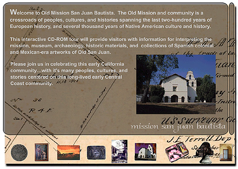

Screen 3: This third part of the "Old San Juan" CD-ROM
provides the main menu through which all navigation pertaining to the primary
content is provided. This audio and text driven screen provides the
welcome and can in turn be bypassed by simply clicking on any of the icons
at the bottom of the screen.
Text, Photographs, and Multimedia
Copyright Ruben G. Mendoza, 2000
Back Main
Forward